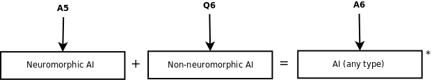

The result from A5 was the probability that neuromorphic AI has been created at different years. In Q6 you provided the probability that non-neuromorphic AI will be created by various years.

These probabilities are assumed to be independent in this model and are combined to produce the overall probability that AI of either type will be created at various points in the future.
*The probabilities aren't just added, see math details for more information.